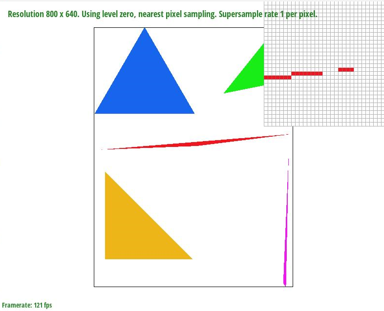
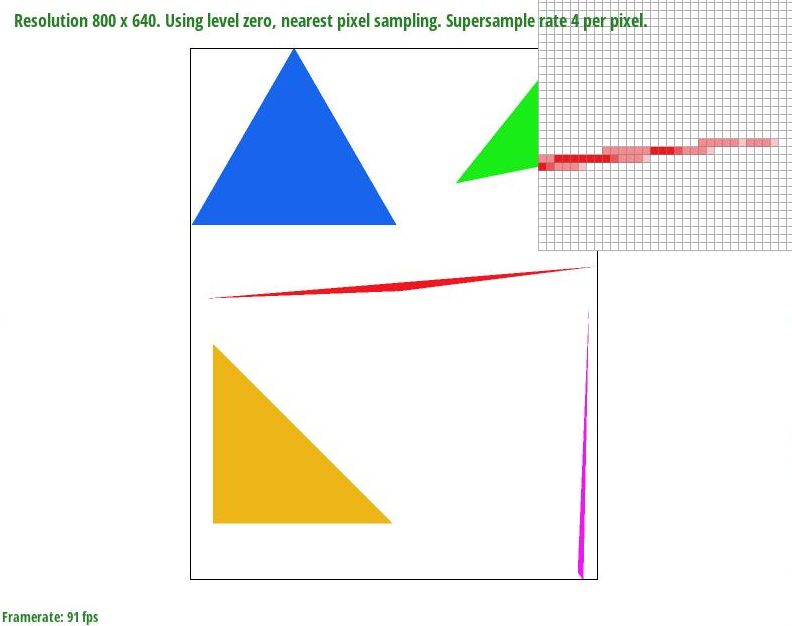
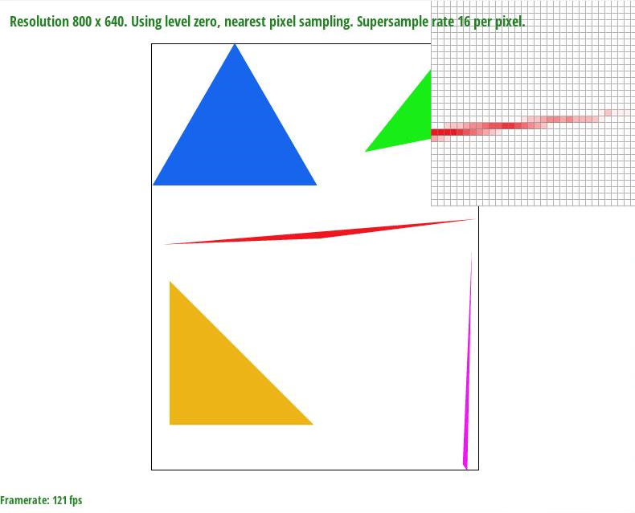
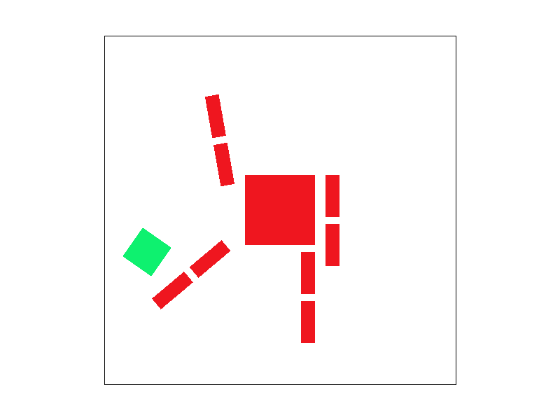
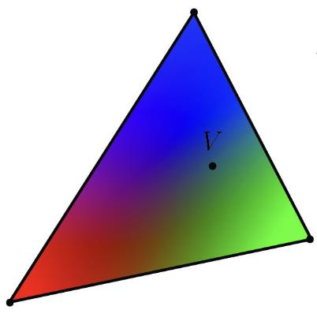
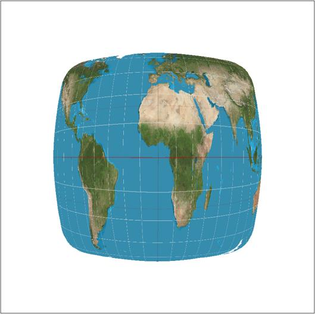
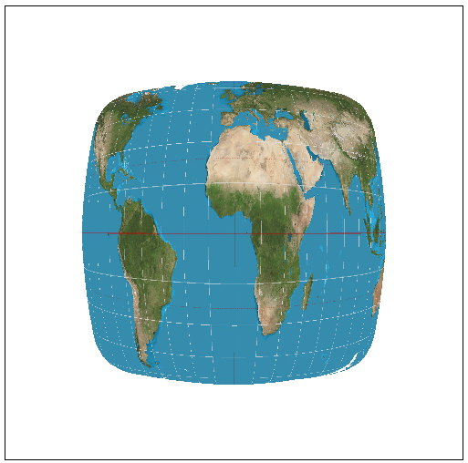
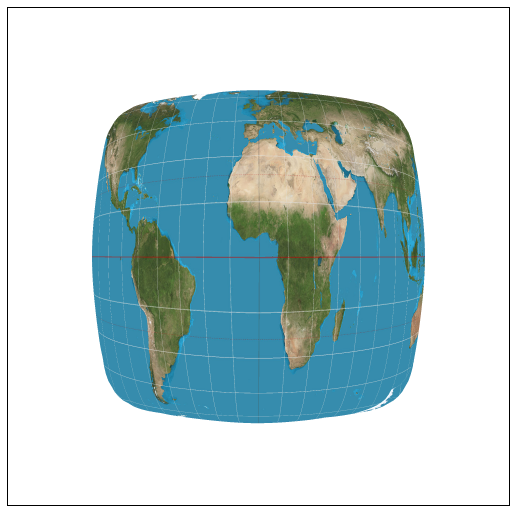

Overview
Give a high-level overview of what you implemented in this homework Think about what you've built as a whole. Share your thoughts on what interesting things you've learned from completing the homework.
Section I: Rasterization
Part 1: Rasterizing single-color triangles
To rasterize triangles, I loop through each pixel in the bounding box of the triangles. For each pixel, calculate the sampling point coordinate and use the three-line test to check if the sampling point is inside the triangle. Call the rasterize_point method on the pixel where its sampling point is inside the triangle.
My algorithm is no worse than one that checks each sample within the bounding box of the triangle because this is exactly what I did.
Below is the screenshot:

Here is an example 2x2 gridlike structure using an HTML table. Each tr is a row and each td is a column in that row. You might find this useful for framing and showing your result images in an organized fashion.
Part 2: Antialiasing triangles
I dynamically resized sample_buffer to width*height*sample_rate to store all the sampling points. For each pixel, (x, y) inside the bounding box of the triangle, I equally sampled sample_rate number of points and fill the corresponding block in sample_buffer with the color of the triangle if the sample point is inside the triangle. Lastly, I average out the color of every sample_rate number of samples and store the average color into the frame_buffer. The resulting color should fill one pixel. In the process, instead of sampling once for each pixel, I drew multiple samples for each pixel as if sampling with hiher frequency rate. Then I down sample the image by averaging out colors within each pixel. Supersampling is useful in antialising as it averages out area with high frequency, and so making the image looks smoother.
|

|

|

|
As showen above, higher sample rate makes the edge of triangle looks blur. This is the case because the edges partially overlaps the pixel, and the darkness of the pixel is porpotional to the overlaping area. This is the result of averaging colors in multiple samples within one pixel.
Part 3: Transforms
The cube man kicks his head away~
Section II: Sampling
Part 4: Barycentric coordinates

Barycentric coordinates describe the position relative to the three vertices of a triangle. The closer a point is to a vertex, the higher the component of that vertex is weighted. For example, in the above picture, the closer a point is to a vertex, the closer its color is to the color of the vertex.
Below is the screenshot of basic test 7

Part 5: "Pixel sampling" for texture mapping
For each sample point, (x, y), I map the sample point from world space to texture space by calculating the relative position in barycentric coordinates. For each sample, if the sampling method is nearest, I just floor the u and v and directly retrive the texture pixel at that point. If the samling method is bilinear, then I retrive the four nearest texture pixel and average the color. Below pictures show the two methods in different sampling reate:
|

|
|
|

|

|
Comment on the relative differences. Discuss when there will be a large difference between the two methods and why For sample rate at 1, the image with nearest method is more granular while the image with bilinear method is more blur. For sample rate at 16, there is no obvious difference. In general, there will be a large difference between the two methods when the sampling rate is low and the image frequency is high.
Part 6: "Level sampling" with mipmaps for texture mapping
Section III: Art Competition
If you are not participating in the optional art competition, don't worry about this section!